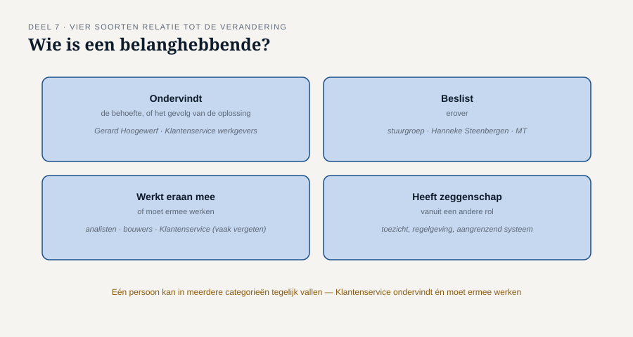
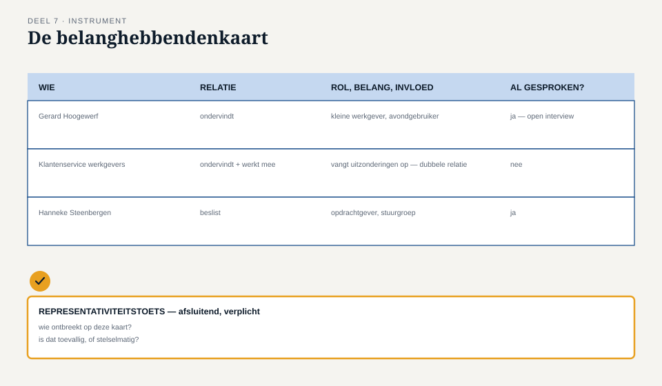

Deel 7 — Belanghebbende: rollen, belangen, drijfveren
Reader · Ductus-cursus Business-analyse · niveau 1 (fundament) · deel 7 van 30
7.1 Waar dit deel over gaat
Deel 6 gaf je de technieken om een behoefte op te halen. Maar elke techniek is zo goed als de keuze wíe je ermee benadert. Dit deel gaat over die keuze: hoe je vaststelt wie er allemaal een relatie heeft met een verandering, en hoe je voorkomt dat je onbewust alleen de makkelijkst bereikbare mensen spreekt.
Aan het eind van dit deel kun je:
- belanghebbenden identificeren op basis van hun relatie tot een verandering, niet op basis van beschikbaarheid;
- rol, belang en invloed van een belanghebbende van elkaar onderscheiden;
- vaststellen of een groep gesproken belanghebbenden representatief is voor de volledige populatie die geraakt wordt;
- met de belanghebbendenkaart systematisch in beeld brengen wie erbij hoort — en wie ontbreekt.
Dit deel sluit bevinding B6: er is gesproken met drie werkgevers, en met niemand binnen.
7.2 De casus: drie van de vierduizend
Uit het casusdossier: bij WGP 2.0 zijn drie werkgevers geraadpleegd — de drie grootste. De ruim vierduizend kleine werkgevers, en niemand binnen Meridiaan, zijn niet gesproken.
Merel legt de lijst van geraadpleegde werkgevers uit WGP 2.0 naast het werkgeversbestand. Alle drie leveren hun mutaties per bestand aan, gebruiken het portaal amper, en hebben eigen salarisadministraties met specialistische kennis in huis.
Ze belt Ayla. “Waarom deze drie?”
“Dat waren de werkgevers waar de accountmanagers al een relatie mee hadden. Makkelijk te plannen, kwamen snel terug op onze uitnodiging.”
“En Klantenservice, Uitvoering — zijn die gesproken?”
“Nee. Die zouden toch straks gewoon met het nieuwe portaal werken.”
Twee dingen vallen op. Ten eerste: de drie geraadpleegde werkgevers waren precies de groep die het portaal het minst gebruikt. Ten tweede: de mensen die het meest direct met de gevolgen van het portaal zouden moeten werken — Klantenservice, Uitvoering — werden niet als belanghebbenden gezien, maar als uitvoerders van een besluit dat al vaststond. Beide zijn het gevolg van dezelfde denkfout: belanghebbenden werden gekozen op beschikbaarheid en nabijheid, niet op relatie tot de verandering.
7.3 Wie is een belanghebbende?
Terug naar het denkraam uit deel 2: een belanghebbende is ieder met een relatie tot de verandering, de behoefte of de oplossing. Dat is een ruimere definitie dan “iedereen die er meningen over heeft” of “iedereen die er makkelijk bij te halen is” — en het is preciezer dan “de gebruikers”, want er zijn vaak belanghebbenden die nooit zelf de oplossing gebruiken maar er wel een relatie mee hebben.
Om systematisch te zoeken, is het nuttig relatie in vier soorten uit te splitsen:
Wie ondervindt de behoefte, of het gevolg van de oplossing? Kleine werkgevers zoals Gerard Hoogewerf; Klantenservice werkgevers, die de uitzonderingen opvangen; Uitvoering, die het handmatige werk doet.
Wie beslist erover? De stuurgroep, Hanneke Steenbergen als opdrachtgever, uiteindelijk het MT.
Wie werkt eraan mee, of moet ermee werken? De analisten, de bouwers, en — vaak vergeten — de medewerkers wier dagelijkse werk verandert zonder dat zij ooit “aan het project” werkten, zoals Klantenservice.
Wie heeft er zeggenschap over vanuit een andere rol — toezicht, regelgeving, een aangrenzend systeem? Bij Meridiaan wordt dit type belanghebbende pas op niveau 3 zwaarwegend (DNB, AFM), maar het bestaat ook op kleinere schaal: bijvoorbeeld de eigenaar van een ander systeem waarmee gekoppeld wordt.
Eén persoon kan in meerdere van deze vier categorieën tegelijk vallen. Klantenservice werkgevers ondervindt het gevolg én moet ermee werken — een dubbele relatie die haar tot een van de belangrijkste belanghebbenden van de hele verandering maakt, en die bij WGP 2.0 volledig over het hoofd is gezien.

7.4 Rol, belang en invloed
Voor elke belanghebbende die je identificeert, zijn drie dingen apart de moeite van het vastleggen waard — ze worden vaak door elkaar gehaald, terwijl ze elk iets anders zeggen.
Rol — de formele of feitelijke positie: werkgever, Klantenservice-medewerker, directeur, toezichthouder. Zegt iets over wát iemand doet.
Belang — waar iemand baat bij heeft, of wat hij te verliezen heeft bij deze verandering. Zegt iets over wáárom iemand zich ermee bemoeit, of zou moeten bemoeien. Gerard Hoogewerf heeft belang bij minder gedoe 's avonds; Klantenservice heeft belang bij minder onvoorspelbaar werk.
Invloed — hoeveel zeggenschap of macht iemand feitelijk heeft over de uitkomst, los van hoe groot zijn belang is. Hanneke Steenbergen heeft grote invloed en een gematigd persoonlijk belang (zij ondervindt de dagelijkse gevolgen niet zelf). Gerard Hoogewerf heeft een reëel belang en nagenoeg geen invloed — hij kan niet meebeslissen, hoogstens meepraten als iemand hem daarvoor uitnodigt.
De denkfout die WGP 2.0 maakte
De drie grote werkgevers werden gekozen omdat ze makkelijk te bereiken waren — een factor die niets met rol, belang of invloed te maken heeft. Dat is een vierde, ongewenste factor die zich graag vermomt als een geldige reden: beschikbaarheid. Beschikbaarheid mag meewegen bij de planning van gesprekken; zij mag nooit bepalend zijn voor de vraag wíe je spreekt. Zodra dat wel gebeurt, ontstaat er een vertekend beeld dat toevallig ook nog overtuigend oogt — er zíjn tenslotte drie werkgevers gesproken, het ziet eruit als zorgvuldig werk.
7.5 Representativiteit: spreek je de juiste mensen, of de makkelijkste?
Zelfs met de juiste categorieën in beeld, blijft er een vraag die apart gesteld moet worden: is de groep die je daadwerkelijk spreekt representatief voor de volledige populatie die geraakt wordt?
Bij Meridiaan bestaat de groep werkgevers uit ruwweg 4.800 organisaties, waarvan de overgrote meerderheid — ruim 4.000 — een kleine werkgever is zoals Gerard of Yasmin uit deel 6. Drie grote werkgevers vertegenwoordigen geen enkele van de kenmerken die deze meerderheid deelt: zij leveren via bestand aan, gebruiken het portaal amper, en hebben professionele ondersteuning. Het is niet dat deze drie werkgevers niets waardevols te zeggen hadden — Wilma Prins’ punt over meerdere regelingen uit deel 5 was relevant — maar hun ervaring dekt niet de ervaring van de meerderheid.
Een eenvoudige controlevraag
Als ik alleen met deze mensen had gesproken, welk deel van de belanghebbenden zou ik dan nooit gehoord hebben — en is dat toevallig, of stelselmatig?
Bij WGP 2.0 is het antwoord stelselmatig: elke kleine werkgever, elke medewerker van Klantenservice en Uitvoering viel buiten beeld, en dat gebeurde niet toevallig maar doordat de selectie op beschikbaarheid liep in plaats van op relatie tot de verandering.
7.6 De werkvorm: de belanghebbendenkaart
Het instrument van dit deel is de belanghebbendenkaart: een overzicht van alle belanghebbenden, ingedeeld naar relatie, rol, belang en invloed, met een expliciete representativiteitscheck.
Het blad
Voor elke belanghebbende (of groep belanghebbenden):
Wie — naam of omschrijving van de groep. Relatie — ondervindt, beslist, werkt mee, of heeft zeggenschap vanuit een andere rol (§7.3); meerdere relaties mogen tegelijk gelden. Rol, belang, invloed — apart ingevuld (§7.4). Al gesproken? — ja, met welke techniek uit deel 6; of nee.
Het veld dat het verschil maakt
Wie ontbreekt op deze kaart, en is dat waarschijnlijk toeval?
Dit veld dwingt tot het spiegelbeeld van de rest van de kaart: niet wie je hebt gevonden, maar wie er stelselmatig ontbreekt. Vraag hierbij expliciet: is er een groep die op geen van de eerdere regels voorkomt, terwijl zij wel een relatie heeft volgens §7.3? Bij WGP 2.0 zou dit veld in één keer Klantenservice, Uitvoering en de ruim vierduizend kleine werkgevers hebben blootgelegd.

Toegepast op WGP 2.0, achteraf
| Wie | Relatie | Belang | Invloed | Gesproken? |
|---|---|---|---|---|
| Drie grote werkgevers | Ondervindt (beperkt, gebruikt portaal amper) | Laag-gemiddeld | Laag | Ja |
| ~4.000 kleine werkgevers | Ondervindt (dagelijks) | Hoog | Laag individueel, hoog gezamenlijk | Nee |
| Klantenservice werkgevers | Ondervindt + werkt mee | Hoog | Laag formeel, hoog feitelijk (kent het werk) | Nee |
| Uitvoering (Pim Vroegop e.a.) | Ondervindt + werkt mee | Hoog | Laag formeel | Nee |
| Hanneke Steenbergen | Beslist | Gematigd | Hoog | Ja (als opdrachtgever) |
Het patroon springt eruit zodra het zo naast elkaar staat: precies de belanghebbenden met het hoogste belang en de meeste vakkennis waren het minst betrokken.
7.7 Wat het examen hierover vraagt
Dit deel dekt domein 7, belanghebbende, 10% van het ECBA-examen. Verwacht vragen die:
- vragen om rol, belang en invloed van elkaar te onderscheiden in een situatieschets;
- een selectie van geraadpleegde belanghebbenden voorleggen en vragen naar het risico van onvolledigheid;
- vragen naar het verschil tussen beschikbaarheid en relevantie als selectiecriterium.
Begrippenlijst, vervolg
| Nederlands | Engels |
|---|---|
| belanghebbende | stakeholder |
| rol | role |
| belang | interest |
| invloed | influence |
| representatief | representative |
7.8 Terug naar de casus
Bevinding B6 — er is gesproken met drie werkgevers en met niemand binnen — is met dit deel te herleiden tot een concrete denkfout: belanghebbenden werden geselecteerd op beschikbaarheid, niet op relatie, belang of invloed. De belanghebbendenkaart maakt die denkfout zichtbaar vóórdat zij tot gevolgen leidt, door uitdrukkelijk te vragen wie ontbreekt in plaats van alleen te bevestigen wie er is.
Vooruit naar deel 8. Met behoefte (deel 6) en belanghebbenden (deel 7) nu goed in beeld, is het tijd om terug te keren naar het lege vakje uit het evenwichtsblad van deel 2: de oplossing. Deel 8 gaat over opties, haalbaarheid en een onderbouwde aanbeveling.